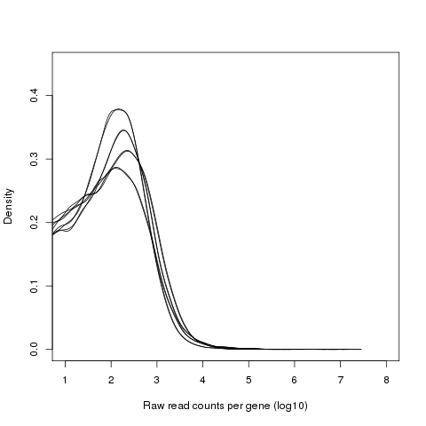
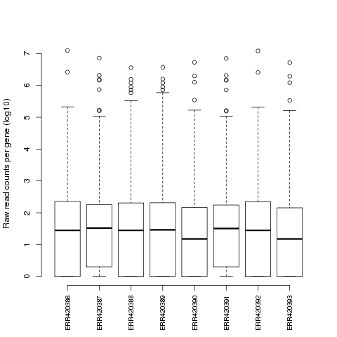
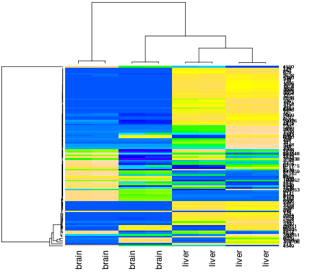
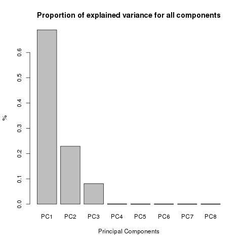
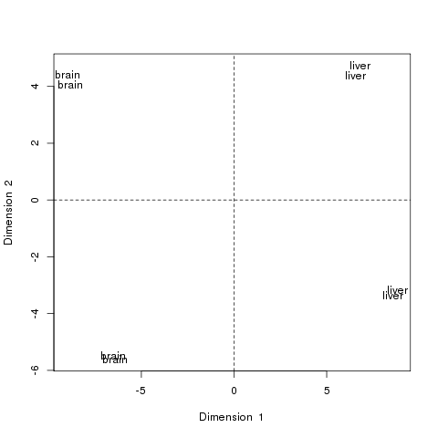

RNA-seq: differential gene expression analysis
Learning Objectives
This course is an introduction to differential expression analysis from RNAseq data. It will take you from the raw fastq files all the way to the list of differentially expressed genes, via the mapping of the reads to a reference genome and statistical analysis using the limma package.
The Monash Bioinformatics Platform thanks and acknowledges QFAB (http://www.qfab.org) for original materials in this section.
Install and load packages
Most generic R packages are hosted on the Comprehensive R Archive Network (CRAN, http://cran.us.r-project.org/). To install one of these packages, you would use install.packages("packagename"). You only need to install a package once, then load it each time using library(packagename).
Bioconductor packages work a bit differently, and are not hosted on CRAN. Go to http://bioconductor.org/ to learn more about the Bioconductor project. To use any Bioconductor package, you’ll need a few “core” Bioconductor packages. Run the following commands to (1) download the installer script, and (2) install some core Bioconductor packages. You’ll need internet connectivity to do this, and it’ll take a few minutes, but it only needs to be done once.
# Download the installer script
source("http://bioconductor.org/biocLite.R")
# biocLite() is the bioconductor installer function. Run it without any
# arguments to install the core packages or update any installed packages. This
# requires internet connectivity and will take some time!
biocLite()Data pre-processing
To start with, delete all previously saved R objects and define your working directory for the RNAseq data analysis.
# Delete all previously saved R objects
rm(list=ls())The data considered for the RNAseq part of the course have been downloaded from ArrayExpress (http://www.ebi.ac.uk/arrayexpress) and correspond to 8 RNA sequencing libraries from Human brain and liver.
Raw sequencing data are usually available in FASTQ format which is a well defined text-based format for storing both biological sequences (usually nucleotide sequences) and their corresponding quality scores. The raw data from this study have been downloaded (8Gb / fastq file) into the shared directory “~/data/RNAseq/raw_data”.
# define shared directory for RNAseq data
RNAseqDATADIR <- "/mnt/RNAseqCourse/raw_data"
#list the fastq files in the raw data directory
dir(RNAseqDATADIR)## [1] "ERR420386_1.fastq.gz" "ERR420386_2.fastq.gz"
## [3] "ERR420387_1.fastq.gz" "ERR420387_2.fastq.gz"
## [5] "ERR420388_1.fastq.gz" "ERR420388_2.fastq.gz"
## [7] "ERR420388_mini_1.fastq.gz" "ERR420388_mini_2.fastq.gz"
## [9] "ERR420388_subsamp_1.fastq.gz" "ERR420388_subsamp_2.fastq.gz"
## [11] "ERR420389_1.fastq.gz" "ERR420389_2.fastq.gz"
## [13] "ERR420390_1.fastq.gz" "ERR420390_2.fastq.gz"
## [15] "ERR420391_2.fastq.gz" "ERR420392_1.fastq.gz"
## [17] "ERR420392_2.fastq.gz" "ERR420393_1.fastq.gz"
## [19] "ERR420393_2.fastq.gz" "experiment_design.txt"The first step in a RNAseq analysis is to run a quick quality check on your data, this will give you an idea of the quality of your raw data in terms of number of reads per library, read length, average quality score along the reads, GC content, sequence duplication level, adaptors that might have not been removed correctly from the data etc.
The fastQC tool is quick and easy to run and can be downloaded from here: http://www.bioinformatics.babraham.ac.uk/projects/fastqc/.
To ensure highest quality of the sequences for subsequent mapping and differential expression analysis steps, the reads can also be trimmed using the Trimmomatic tool (Lohse et al. 2012, http://www.usadellab.org/cms/?page=trimmomatic).
Mapping reads to a reference genome
Once the reads have been quality checked and trimmed, the next step is to map the reads to the reference genome (in our case the human genome “hg19”). This can be done with the Bioconductor package Rsubread (Y et al. 2013).
library(Rsubread)If the package is not already installed on your system, you can install it by typing:
source("http://bioconductor.org/biocLite.R")
biocLite("Rsubread")Rsubread provides reference genome indices for the most common organisms: human and mouse. If you are working with a different organism you can build your own index using the buildindex command.
# define the reference genome fasta file
REF_GENOME <- "hg19.fa"
# define the output directory for the Rsubread index
RSUBREAD_INDEX_PATH <- "/mnt/RNAseqCourse/ref_data"
# define the basename for the index
RSUBREAD_INDEX_BASE <- "hg19"
# check what is in the reference directory
dir(RSUBREAD_INDEX_PATH)# build the index
buildindex(basename=file.path(RSUBREAD_INDEX_PATH,RSUBREAD_INDEX_BASE), reference=REF_GENOME)Once the Rsubread index has been created you can map your reads to the genome by running the align command.
The code below will be used to map the reads for a specific library against the genome for which the index has been built.
# list files in the raw data directory
dir(RNAseqDATADIR)
# define the fastq file with forward reads
inputfilefwd <- file.path(RNAseqDATADIR,"ERR420388_subsamp_1.fastq.gz")
# define the fastq file with reverse reads
inputfilervs <- file.path(RNAseqDATADIR,"ERR420388_subsamp_2.fastq.gz")
# run the align command to map the reads
align(index=file.path(RSUBREAD_INDEX_PATH,RSUBREAD_INDEX_BASE), readfile1=inputfilefwd, readfile2=inputfilervs, output_file="ERR420388.sam", output_format="SAM")The function propmapped returns the proportion of mapped reads in the output SAM file: total number of input reads, number of mapped reads and proportion of mapped reads. Let’s have a look at a small SAM file as an example:
# define the path to SAM file
outputsamfile <- "/mnt/RNAseqCourse/mapping/ERR420388.sam"
propmapped(outputsamfile)Count reads for each feature
Rsubread provides a read summarization function featureCounts, which takes as input the SAM or BAM files and assigns them to genomic features. This gives the number of reads mapped per gene, which can then be transformed into RPKM values (Read Per Killobase per Million), normalised and tested for differential expression.
For the purpose of this course we will use the index previously built and its corresponding GTF file to identify and count the reads mapped to each feature (gene).
# Getting read counts using the index previously built
mycounts<-featureCounts(outputsamfile, annot.ext=file.path(RSUBREAD_INDEX_PATH,"hg19.genes.gtf"), isGTFAnnotationFile=TRUE, isPairedEnd=TRUE)
# Checking your output object
summary(mycounts)
dim(mycounts$counts)
head(mycounts$annotation)
mycounts$targets
mycounts$statFor the purpose of this course the read summarisation step has already been performed for all libraries. You will need to load the corresponding RData file to get these read counts.
MAPPINGDIR <- "/mnt/RNAseqCourse/mapping"
# load the counts previously calculated
load(file.path(MAPPINGDIR,"RawCounts.RData"))
# check the presence of read counts for the 8 libraries
summary(counts)## Length Class Mode
## counts 205616 -none- numeric
## annotation 2 data.frame list
## targets 8 -none- charactercounts$targets## [1] "/data/Intro_to_R/RNAseq/mapping/ERR420386.sam"
## [2] "/data/Intro_to_R/RNAseq/mapping/ERR420387.sam"
## [3] "/data/Intro_to_R/RNAseq/mapping/ERR420388.sam"
## [4] "/data/Intro_to_R/RNAseq/mapping/ERR420389.sam"
## [5] "/data/Intro_to_R/RNAseq/mapping/ERR420390.sam"
## [6] "/data/Intro_to_R/RNAseq/mapping/ERR420391.sam"
## [7] "/data/Intro_to_R/RNAseq/mapping/ERR420392.sam"
## [8] "/data/Intro_to_R/RNAseq/mapping/ERR420393.sam"You can then print out these counts in a text file for future reference.
# print out counts table for every sample
write.table(counts$counts,file="~/raw_read_counts.txt",sep="\t", quote=F,append=F)QC and stats
Rsubread provides the number of reads mapped to each gene which can then be used for ploting quality control figures and for differential expression analysis.
QC figures of the mapped read counts can be plotted and investigated for potential outlier libraries and to confirm grouping of samples.
Before plotting QC figures it is useful to get the experiment design. This will allow labeling the data with the sample groups they belong to, or any other parameter of interest.
The experiment design file corresponding to this study has been downloaded from the ArrayExpress webpage and formatted as a tab separated file for this analysis purposes. You can find it in the shared data directory.
# define the experiment design file (tab separated text file is best)
EXPMT_DESIGN_FILE <- file.path(RNAseqDATADIR,'experiment_design.txt')
# read the experiment design file and save it into memory
experiment_design<-read.table(EXPMT_DESIGN_FILE,header=T,sep="\t")
#
# set the rownames to the sampleID to allow for ordering
rownames(experiment_design) <- experiment_design$SampleID
# order the design following the counts sample order
experiment_design.ord <- experiment_design[colnames(counts$counts),]
# look at the design
experiment_design.ord## SampleID Source_Name organism sex age tissue
## ERR420386 ERR420386 brain_sample_1 Homo_sapiens male 26 brain
## ERR420387 ERR420387 brain_sample_1 Homo_sapiens male 26 brain
## ERR420388 ERR420388 liver_sample_1 Homo_sapiens male 30 liver
## ERR420389 ERR420389 liver_sample_1 Homo_sapiens male 30 liver
## ERR420390 ERR420390 liver_sample_1 Homo_sapiens male 30 liver
## ERR420391 ERR420391 brain_sample_1 Homo_sapiens male 26 brain
## ERR420392 ERR420392 brain_sample_1 Homo_sapiens male 26 brain
## ERR420393 ERR420393 liver_sample_1 Homo_sapiens male 30 liver
## Extract_Name Material_Type Assay_Name technical_replicate_group
## ERR420386 GCCAAT RNA Assay4 group_2
## ERR420387 ACAGTG RNA Assay2 group_1
## ERR420388 GTGAAA RNA Assay7 group_4
## ERR420389 GTGAAA RNA Assay8 group_4
## ERR420390 CTTGTA RNA Assay6 group_3
## ERR420391 ACAGTG RNA Assay1 group_1
## ERR420392 GCCAAT RNA Assay3 group_2
## ERR420393 CTTGTA RNA Assay5 group_3# list the ordered samples for future use
samples <- as.character(experiment_design.ord$SampleID)
# create factors for future plotting
group<-factor(experiment_design.ord$tissue)
group## [1] brain brain liver liver liver brain brain liver
## Levels: brain liverage<-factor(experiment_design.ord$age)
age## [1] 26 26 30 30 30 26 26 30
## Levels: 26 30Basic QC plots
Density plots of log-intensity distribution of each library can be superposed on a single graph for a better comparison between libraries and for identification of libraries with weird distribution. On the boxplots the density distributions of raw log-intensities are not expected to be identical but still not totally different.
# density plot of raw read counts (log10)
png(file="~/Raw_read_counts_per_gene.density.png")
logcounts <- log(counts$counts[,1],10)
d <- density(logcounts)
plot(d,xlim=c(1,8),main="",ylim=c(0,.45),xlab="Raw read counts per gene (log10)", ylab="Density")
for (s in 2:length(samples)){
logcounts <- log(counts$counts[,s],10)
d <- density(logcounts)
lines(d)
}
dev.off()
Boxplots of the raw read counts after log10 transformation.
## box plots of raw read counts (log10)
png(file="~/Raw_read_counts_per_gene.boxplot.png")
logcounts <- log(counts$counts,10)
boxplot(logcounts, main="", xlab="", ylab="Raw read counts per gene (log10)",axes=FALSE)
axis(2)
axis(1,at=c(1:length(samples)),labels=colnames(logcounts),las=2,cex.axis=0.8)
dev.off()
In order to investigate the relationship between samples, hierarchical clustering can be performed using the heatmap function from the stats package. In this example heatmap calculates a matrix of euclidean distances from the mapped read counts for the 100 most highly expressed genes.
# select data for the 100 most highly expressed genes
select = order(rowMeans(counts$counts), decreasing=TRUE)[1:100]
highexprgenes_counts <- counts$counts[select,]
# heatmap with sample name on X-axis
png(file="~/High_expr_genes.heatmap.png")
heatmap(highexprgenes_counts, col=topo.colors(50), margin=c(10,6))
dev.off()You will notice that the samples clustering does not follow the original order in the data matrix (alphabetical order “ERR420386” to “ERR420393”). They have been re-ordered according to the similarity of the 100 genes expression profiles. To understand what biological effect lies under this clustering, one can use the samples annotation for labeling (samples group, age, sex etc).
# heatmap with condition group as labels
colnames(highexprgenes_counts)<- group
# plot
png(file="~/High_exprs_genes.heatmap.group.png")
heatmap(highexprgenes_counts, col = topo.colors(50), margin=c(10,6))
dev.off()
Exercise: Heatmap
Produce a heatmap for the 50 most highly expressed genes and annotate the samples with with their age.
- Subset the read counts object for the 50 most highly expressed genes
- Annotate the samples in the subset with their age (check order with design!)
- Plot a heatmap with this subset of data, scaling genes and ordering both genes and samples
Principal Component Analysis
A Principal Component Analysis (PCA) can also be performed with these data using the cmdscale function (from the stats package) which performs a classical multidimensional scaling of a data matrix.
Reads counts need to be transposed before being analysed with the cmdscale functions, i.e. genes should be in columns and samples should be in rows. This is the code for transposing and checking the data before further steps:
# select data for the 1000 most highly expressed genes
select = order(rowMeans(counts$counts), decreasing=TRUE)[1:100]
highexprgenes_counts <- counts$counts[select,]
# annotate the data with condition group as labels
colnames(highexprgenes_counts)<- group
# transpose the data to have variables (genes) as columns
data_for_PCA <- t(highexprgenes_counts)
dim(data_for_PCA)## [1] 8 100The cmdscale function will calculate a matrix of dissimilarities from your transposed data and will also provide information about the proportion of explained variance by calculating Eigen values.
## calculate MDS (matrix of dissimilarities)
mds <- cmdscale(dist(data_for_PCA), k=3, eig=TRUE)
# k = the maximum dimension of the space which the data are to be represented in
# eig = indicates whether eigenvalues should be returnedThe variable mds$eig provides the Eigen values for the first 8 principal components:
mds$eig## [1] 9.490938e+13 1.099639e+13 1.125271e+11 1.026586e+10 1.500500e+07
## [6] 6.240239e+06 3.206875e+06 2.285361e-03Plotting this variable as a percentage will help you determine how many components can explain the variability in your dataset and thus how many dimensions you should be looking at.
# transform the Eigen values into percentage
eig_pc <- mds$eig * 100 / max(mds$eig)
# plot the PCA
png(file="~/PCA_PropExplainedVariance.png")
plot(eig_pc,
type="h", lwd=15, las=1,
xlab="Dimensions",
ylab="Proportion of explained variance", y.axis=NULL,
col="darkgrey")
dev.off()
In most cases, the first 2 components explain more than half the variability in the dataset and can be used for plotting. The cmdscale function run with default parameters will perform a principal components analysis on the given data matrix and the plot function will provide scatter plots for individuals representation.
## calculate MDS
mds <- cmdscale(dist(data_for_PCA)) # Performs MDS analysis #Samples representation
png(file="~/PCA_Dim1vsDim2.png")
plot(mds[,1], -mds[,2], type="n", xlab="Dimension 1", ylab="Dimension 2", main="")
text(mds[,1], -mds[,2], rownames(mds), cex=0.8)
dev.off()
The PCA plot of the first two components show a clear separation of the Brain and Liver samples across the 1st dimension. Within each sample group we can also notice a split between the 4 samples of each group, which seem to cluster in pair. This observation can be explained by another factor of variability in the data, commonly batch effect or another biological biais such as age or sex.
Exercise: PCA
Produce a PCA plot from the read counts of the 500 most highly expressed genes and change the labels until you can identify the reason for the split between samples from the same tissue.
- Get the read counts for the 500 most highly expressed genes
- Transpose this matrix of read counts
- Check the number of dimensions explaining the variability in the dataset
- Run the PCA with an appropriate number of components
- Annotate the samples with their age & re-run the PCA & plot the main components
- Annotate the samples with other clinical data & re-run the PCA & plot the main components until you can separate the samples within each tissue group
Differential Expression
Before proceeding with differential expression analysis, it is useful to filter out very lowly expressed genes. This will help increasing the statistical power of the analysi while keeping genes of interest. A common way to do this is by filtering out genes having less than 1 count-per-million reads (cpm) in half the samples. The “edgeR” library provides the cpm function which can be used here.
# load required libraries
library(edgeR)## Loading required package: limma
## Loading required package: methods# get the expression counts from previous alignment step
mycounts <- counts$counts
dim(mycounts)## [1] 25702 8mycounts[1:5,1:3]## ERR420386 ERR420387 ERR420388
## 1 2 56 5461
## 2 3723 2270 27665
## 9 14 3 148
## 10 1 1 373
## 12 42 34 20969# filtering
#Keep genes with least 1 count-per-million reads (cpm) in at least 4 samples
isexpr <- rowSums(cpm(mycounts)>1) >= 4
table(isexpr)## isexpr
## FALSE TRUE
## 10686 15016mycounts <- mycounts[isexpr,]
genes <- rownames(mycounts)
dim(mycounts)## [1] 15016 8The limma package (since version 3.16.0) offers the voom function that will normalise read counts and apply a linear model to the normalised data before computing moderated t-statistics of differential expression.
# load required libraries
library(limma)
# check your samples grouping
experiment_design.ord[colnames(mycounts),]$tissue == group## [1] TRUE TRUE TRUE TRUE TRUE TRUE TRUE TRUE# create design matrix for limma
design <- model.matrix(~0+group)
# substitute "group" from the design column names
colnames(design)<- gsub("group","",colnames(design))
# check your design matrix
design## brain liver
## 1 1 0
## 2 1 0
## 3 0 1
## 4 0 1
## 5 0 1
## 6 1 0
## 7 1 0
## 8 0 1
## attr(,"assign")
## [1] 1 1
## attr(,"contrasts")
## attr(,"contrasts")$group
## [1] "contr.treatment"# calculate normalization factors between libraries
nf <- calcNormFactors(mycounts)
#
# normalise the read counts with 'voom' function
y <- voom(mycounts,design,lib.size=colSums(mycounts)*nf)
# extract the normalised read counts
counts.voom <- y$E
# save normalised expression data into output dir
write.table(counts.voom,file="~/counts.voom.txt",row.names=T,quote=F,sep="\t")
# fit linear model for each gene given a series of libraries
fit <- lmFit(y,design)
# construct the contrast matrix corresponding to specified contrasts of a set of parameters
cont.matrix <- makeContrasts(liver-brain,levels=design)
cont.matrix ## Contrasts
## Levels liver - brain
## brain -1
## liver 1# compute estimated coefficients and standard errors for a given set of contrasts
fit <- contrasts.fit(fit, cont.matrix)
# compute moderated t-statistics of differential expression by empirical Bayes moderation of the standard errors
fit <- eBayes(fit)
options(digits=3)
# check the output fit
dim(fit)## [1] 15016 1ThetopTable function summarises the output from limma in a table format. Significant DE genes for a particular comparison can be identified by selecting genes with a p-value smaller than a chosen cut-off value and/or a fold change greater than a chosen value in this table. By default the table will be sorted by increasing adjusted p-value, showing the most significant DE genes at the top.
# set adjusted pvalue threshold and log fold change threshold
mypval=0.01
myfc=3
# get the coefficient name for the comparison of interest
colnames(fit$coefficients)## [1] "liver - brain"mycoef="liver - brain"
# get the output table for the 10 most significant DE genes for this comparison
topTable(fit,coef=mycoef)## logFC AveExpr t P.Value adj.P.Val B
## 5265 10.45 7.33 86.7 1.89e-13 1.37e-09 18.6
## 3240 11.28 7.62 89.4 1.46e-13 1.37e-09 18.5
## 2335 6.82 8.56 67.2 1.53e-12 2.93e-09 18.4
## 213 11.77 10.69 69.3 1.19e-12 2.93e-09 18.3
## 338 11.51 8.31 70.4 1.04e-12 2.93e-09 18.0
## 2243 11.56 7.17 80.0 3.64e-13 1.37e-09 17.7
## 716 7.49 6.75 61.0 3.38e-12 4.22e-09 17.7
## 229 10.90 6.45 82.0 2.98e-13 1.37e-09 17.4
## 1571 9.64 6.62 63.8 2.33e-12 3.18e-09 17.3
## 125 11.54 7.08 64.3 2.19e-12 3.18e-09 16.9# get the full table ("n = number of genes in the fit")
limma.res <- topTable(fit,coef=mycoef,n=dim(fit)[1])
# get significant DE genes only (adjusted p-value < mypval)
limma.res.pval <- topTable(fit,coef=mycoef,n=dim(fit)[1],p.val=mypval)
dim(limma.res.pval)## [1] 8183 6# get significant DE genes with low adjusted p-value high fold change
limma.res.pval.FC <- limma.res.pval[which(abs(limma.res.pval$logFC)>myfc),]
dim(limma.res.pval.FC)## [1] 3044 6# write limma output table for significant genes into a tab delimited file
filename = paste("~/DEgenes_",mycoef,"_pval",mypval,"_logFC",myfc,".txt",sep="")
write.table(limma.res.pval.FC,file=filename,row.names=T,quote=F,sep="\t")Exercise: Limma
Get the number of DE genes between technical group 1 and technical group 2 (all Brain samples) with adj pvalue<0.01.
- Create a new design matrix for limma with the technical replicate groups
- Re-normalise the read counts with ‘voom’ function with new design matrix
- Fit a linear model on these normalised data
- Make the contrast matrix corresponding to the new set of parameters
- Fit the contrast matrix to the linear model
- Compute moderated t-statistics of differential expression
- Get the output table for the 10 most significant DE genes for this comparison
Gene Annotation
The annotation of EntrezGene IDs from RNAseq data can be done using the BioMart database which contains many species including Human, Mouse, Zebrafish, Chicken and Rat.
# get the Ensembl annotation for human genome
library(biomaRt)
mart<- useDataset("hsapiens_gene_ensembl", useMart("ENSEMBL_MART_ENSEMBL",host="www.ensembl.org"))
# get entrez gene IDs from limma output table
entrez_genes <- as.character(rownames(limma.res.pval.FC))
length(entrez_genes)## [1] 3044# interrogate the BioMart database to get gene symbol and description for these genes
detags.IDs <- getBM(
filters= "entrezgene",
attributes= c("entrezgene","hgnc_symbol","description"),
values= entrez_genes,
mart= mart
)
dim(detags.IDs)## [1] 2878 3head(detags.IDs)## entrezgene hgnc_symbol
## 1 10 NAT2
## 2 10000 AKT3
## 3 100033415 SNORD116-3
## 4 100033421 SNORD116-9
## 5 100033427 SNORD116-15
## 6 100033442 SNORD115-5
## description
## 1 N-acetyltransferase 2 (arylamine N-acetyltransferase) [Source:HGNC Symbol;Acc:HGNC:7646]
## 2 v-akt murine thymoma viral oncogene homolog 3 [Source:HGNC Symbol;Acc:HGNC:393]
## 3 small nucleolar RNA, C/D box 116-3 [Source:HGNC Symbol;Acc:HGNC:33069]
## 4 small nucleolar RNA, C/D box 116-9 [Source:HGNC Symbol;Acc:HGNC:33075]
## 5 small nucleolar RNA, C/D box 116-15 [Source:HGNC Symbol;Acc:HGNC:33081]
## 6 small nucleolar RNA, C/D box 115-5 [Source:HGNC Symbol;Acc:HGNC:33024]In many cases, several annotations ar available per entrez gene ID. This results in duplicate entries in the output table from getBM. The simplest way to deal with this issue is to remove duplicates, although they can also be concatenated in some ways.
Once the annotation has been obtained for all DE genes, this table can be merged with the output table from limma for a complete result and an easier interpretation.
# remove duplicates
detags.IDs.matrix<-detags.IDs[-which(duplicated(detags.IDs$entrezgene)),]
# select genes of interest only
rownames(detags.IDs.matrix)<-detags.IDs.matrix$entrezgene
entrez_genes.annot <- detags.IDs.matrix[as.character(entrez_genes),]
# join the two tables
rownames(limma.res.pval.FC) <- limma.res.pval.FC$ID
limma.res.pval.FC.annot <- cbind(entrez_genes.annot,limma.res.pval.FC)
# check the annotated table
head(limma.res.pval.FC.annot)## entrezgene hgnc_symbol
## 5265 5265 SERPINA1
## 3240 3240 HP
## 2335 2335 FN1
## 213 213 ALB
## 338 338 APOB
## 2243 2243 FGA
## description
## 5265 serpin peptidase inhibitor, clade A (alpha-1 antiproteinase, antitrypsin), member 1 [Source:HGNC Symbol;Acc:HGNC:8941]
## 3240 haptoglobin [Source:HGNC Symbol;Acc:HGNC:5141]
## 2335 fibronectin 1 [Source:HGNC Symbol;Acc:HGNC:3778]
## 213 albumin [Source:HGNC Symbol;Acc:HGNC:399]
## 338 apolipoprotein B [Source:HGNC Symbol;Acc:HGNC:603]
## 2243 fibrinogen alpha chain [Source:HGNC Symbol;Acc:HGNC:3661]
## logFC AveExpr t P.Value adj.P.Val B
## 5265 10.45 7.33 86.7 1.89e-13 1.37e-09 18.6
## 3240 11.28 7.62 89.4 1.46e-13 1.37e-09 18.5
## 2335 6.82 8.56 67.2 1.53e-12 2.93e-09 18.4
## 213 11.77 10.69 69.3 1.19e-12 2.93e-09 18.3
## 338 11.51 8.31 70.4 1.04e-12 2.93e-09 18.0
## 2243 11.56 7.17 80.0 3.64e-13 1.37e-09 17.7Gene Set Enrichment
Gene Ontology (GO) enrichment is a method for investigating sets of genes using the Gene Ontology system of classification, in which genes are assigned to a particular set of terms for three major domains: cellular component, biological process and molecular function.
The GOstats package can test for both over and under representation of GO terms using the Hypergeometric test. The output of the analysis is typically a ranked list of GO terms, each associated with a p-value.
The Hypergeometric test will require both a list of selected genes (i.e. your DE genes) and a “universe” list (e.g. all genes annotated in the genome you are working with), all represented by their “EntrezGene” ID.
# load the library
library(GOstats)## Loading required package: Biobase
## Loading required package: BiocGenerics
## Loading required package: parallel
##
## Attaching package: 'BiocGenerics'
##
## The following objects are masked from 'package:parallel':
##
## clusterApply, clusterApplyLB, clusterCall, clusterEvalQ,
## clusterExport, clusterMap, parApply, parCapply, parLapply,
## parLapplyLB, parRapply, parSapply, parSapplyLB
##
## The following object is masked from 'package:limma':
##
## plotMA
##
## The following object is masked from 'package:stats':
##
## xtabs
##
## The following objects are masked from 'package:base':
##
## anyDuplicated, append, as.data.frame, as.vector, cbind,
## colnames, do.call, duplicated, eval, evalq, Filter, Find, get,
## intersect, is.unsorted, lapply, Map, mapply, match, mget,
## order, paste, pmax, pmax.int, pmin, pmin.int, Position, rank,
## rbind, Reduce, rep.int, rownames, sapply, setdiff, sort,
## table, tapply, union, unique, unlist, unsplit
##
## Welcome to Bioconductor
##
## Vignettes contain introductory material; view with
## 'browseVignettes()'. To cite Bioconductor, see
## 'citation("Biobase")', and for packages 'citation("pkgname")'.
##
## Loading required package: Category
## Loading required package: stats4
## Loading required package: Matrix
## Loading required package: AnnotationDbi
## Loading required package: GenomeInfoDb
## Loading required package: S4Vectors
## Loading required package: IRanges
##
## Attaching package: 'IRanges'
##
## The following object is masked from 'package:Matrix':
##
## expand
##
##
## Attaching package: 'AnnotationDbi'
##
## The following object is masked from 'package:GenomeInfoDb':
##
## species
##
## Loading required package: GO.db
## Loading required package: DBI
##
## Loading required package: graph
##
## Attaching package: 'GOstats'
##
## The following object is masked from 'package:AnnotationDbi':
##
## makeGOGraph# Define list of genes of interest (DE genes - EntrezGene IDs)
entrezgeneids <- as.character(rownames(limma.res.pval.FC))
length(entrezgeneids)## [1] 3044# Define the universe
universeids <- rownames(mycounts)
length(universeids)## [1] 15016Before running the hypergeometric test with the hyperGTest function, you need to define the parameters for the test (gene lists, ontology, test direction) as well as the annotation database to be used. The ontology to be tested can be any of the three GO domains: biological process (“BP”), cellular component (“CC”) or molecular function (“MF”).
In the example below we will test for over-represented biological processes in our list of differentially expressed genes.
# define the p-value cut off for the hypergeometric test
hgCutoff <- 0.05
params <- new("GOHyperGParams",annotation="org.Hs.eg",geneIds=entrezgeneids,universeGeneIds=universeids,ontology="BP",pvalueCutoff=hgCutoff,testDirection="over")## Loading required package: org.Hs.eg.db## Warning in makeValidParams(.Object): removing geneIds not in
## universeGeneIds# Run the test
hg <- hyperGTest(params)## Warning in .local(name, pos, envir, all.names, pattern): ignoring 'pos'
## argument## Warning in .local(name, pos, envir, all.names, pattern): ignoring 'envir'
## argument## Warning in .local(name, pos, envir, all.names, pattern): ignoring
## 'all.names' argument# Check results
hg## Gene to GO BP test for over-representation
## 8107 GO BP ids tested (3220 have p < 0.05)
## Selected gene set size: 1519
## Gene universe size: 11814
## Annotation package: org.Hs.egYou can get the output table from the test for significant GO terms only by adjusting the pvalues with the p.adjust function.
## Get the p-values of the test
hg.pv <- pvalues(hg)
## Adjust p-values for multiple test (FDR)
hg.pv.fdr <- p.adjust(hg.pv,'fdr')
## select the GO terms with adjusted p-value less than the cut off
sigGO.ID <- names(hg.pv.fdr[hg.pv.fdr < hgCutoff])
length(sigGO.ID)## [1] 2331# get table from HyperG test result
df <- summary(hg)
# keep only significant GO terms in the table
GOannot.table <- df[df[,1] %in% sigGO.ID,]
head(GOannot.table)## GOBPID Pvalue OddsRatio ExpCount Count Size
## 1 GO:0042221 2.09e-101 3.56 327 670 2540
## 2 GO:0050896 6.84e-92 3.18 700 1066 5443
## 3 GO:0032501 1.59e-80 2.88 554 893 4305
## 4 GO:0044707 1.82e-80 2.88 538 876 4183
## 5 GO:0044699 1.54e-76 5.74 1202 1443 9349
## 6 GO:0010033 5.18e-68 3.12 237 487 1840
## Term
## 1 response to chemical
## 2 response to stimulus
## 3 multicellular organismal process
## 4 single-multicellular organism process
## 5 single-organism process
## 6 response to organic substanceThe Gene Ontology enrichment result can be saved in a text file or an html file for future reference.
# Create text report of the significantly over-represented GO terms
write.table(GOannot.table,file="~/GOterms_OverRep_BP.txt",sep="\t",row.names=F)
# Create html report of all over-represented GO terms
htmlReport(hg, file="~/GOterms_OverRep_BP.html")Exercise: GOstats
Identify the GO terms in the Molecular Function domain that are over-represented (pvalue<0.01) in your list of DE genes.
- Get your list of DE genes (Entrez Gene IDs)
- Set the new parameters for the hypergeometric test
- Run the test and adjust the pvalues in the output object
- Identify the significant GO terms at pvalue 0.01
Other softwares can be used to investigate over-represented pathways, such as GeneGO (https://portal.genego.com/) and Ingenuity (http://www.ingenuity.com/products/ipa). The advantage of these softwares is that they maintain curated and up-to-date extensive databases. They also provide intuitive visualisation and network modelling tools.
You can save an image of your RNAseq analysis before moving on to the next part of this course.
RDataFile <- "~/RNAseq_DE_analysis_with_R.RData"
save.image(RDataFile)Record package and version info with sessionInfo()
The sessionInfo function prints version information about R and any attached packages. It’s a good practice to always run this command at the end of your R session and record it for the sake of reproducibility in the future.
sessionInfo()## R version 3.2.2 (2015-08-14)
## Platform: x86_64-pc-linux-gnu (64-bit)
## Running under: Ubuntu 14.04.2 LTS
##
## locale:
## [1] LC_CTYPE=en_AU.UTF-8 LC_NUMERIC=C
## [3] LC_TIME=en_AU.UTF-8 LC_COLLATE=en_AU.UTF-8
## [5] LC_MONETARY=en_AU.UTF-8 LC_MESSAGES=en_AU.UTF-8
## [7] LC_PAPER=en_AU.UTF-8 LC_NAME=C
## [9] LC_ADDRESS=C LC_TELEPHONE=C
## [11] LC_MEASUREMENT=en_AU.UTF-8 LC_IDENTIFICATION=C
##
## attached base packages:
## [1] stats4 parallel methods stats graphics grDevices utils
## [8] datasets base
##
## other attached packages:
## [1] xtable_1.8-0 org.Hs.eg.db_3.0.0 GOstats_2.32.0
## [4] graph_1.44.1 Category_2.32.0 GO.db_3.0.0
## [7] RSQLite_1.0.0 DBI_0.3.1 AnnotationDbi_1.28.2
## [10] GenomeInfoDb_1.2.5 IRanges_2.0.1 S4Vectors_0.4.0
## [13] Matrix_1.2-3 Biobase_2.26.0 BiocGenerics_0.12.1
## [16] biomaRt_2.22.0 edgeR_3.8.6 limma_3.22.7
## [19] Rsubread_1.16.1
##
## loaded via a namespace (and not attached):
## [1] knitr_1.11 magrittr_1.5 splines_3.2.2
## [4] lattice_0.20-33 stringr_1.0.0 tools_3.2.2
## [7] grid_3.2.2 AnnotationForge_1.8.2 genefilter_1.48.1
## [10] survival_2.38-3 RBGL_1.42.0 GSEABase_1.28.0
## [13] formatR_1.2.1 bitops_1.0-6 RCurl_1.95-4.7
## [16] evaluate_0.8 stringi_1.0-1 XML_3.98-1.3
## [19] annotate_1.44.0